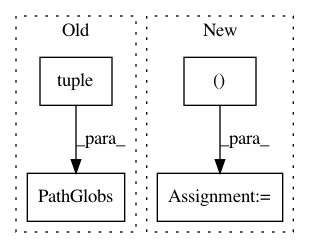

d45af2806326ee71c8f163daea6c0512b58fadd2,src/python/pants/backend/jvm/subsystems/zinc.py,Zinc,_run_bootstrapper,#Zinc#Any#Any#,310
Before Change
"--scala-reflect", self._relative_to_buildroot(self.scala_reflect),
]
input_jar_snapshots = context._scheduler.capture_snapshots((PathGlobsAndRoot(
PathGlobs(tuple([bootstrapper] + bootstrapper_args[1::2])),
get_buildroot(),
),))
argv = tuple([".jdk/bin/java"] +
After Change
bootstrapper_args = [
"--out", self._relative_to_buildroot(bridge_jar),
]
for arg, cp_entry in bootstrap_cp_entries:
bootstrapper_args.append(arg)
bootstrapper_args.append(self._relative_to_buildroot(cp_entry.path))
inputs_digest = context._scheduler.merge_directories([
bootstrapper_entry.directory_digest
] + [
entry.directory_digest for _, entry in bootstrap_cp_entries
In pattern: SUPERPATTERN
Frequency: 3
Non-data size: 4
Instances
Project Name: pantsbuild/pants
Commit Name: d45af2806326ee71c8f163daea6c0512b58fadd2
Time: 2019-07-28
Author: stuhood@gmail.com
File Name: src/python/pants/backend/jvm/subsystems/zinc.py
Class Name: Zinc
Method Name: _run_bootstrapper
Project Name: pantsbuild/pants
Commit Name: 2ca88a5bcb87b2e852b633454307706121978c21
Time: 2020-01-29
Author: ericarellano@me.com
File Name: src/python/pants/engine/legacy/structs.py
Class Name: BaseGlobs
Method Name: to_path_globs
Project Name: pantsbuild/pants
Commit Name: 6229c419d8f1b63cac22f23f24e19ef28d89b0a3
Time: 2018-06-27
Author: dawagner@gmail.com
File Name: src/python/pants/backend/graph_info/tasks/cloc.py
Class Name: CountLinesOfCode
Method Name: console_output